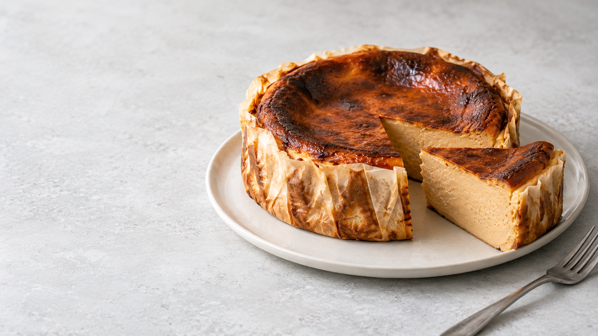

Крем-сыр
ABC Krem sir Classic
Cheesecake · форма 16-18 см
Карамельный чизкейк без основы: тёмный верх, кремовый центр и настройки для электрической духовки.
Внутри мой проверенный режим для Candy FCT615XL/1

01 · Купить
Это авторская карамельная версия баскского чизкейка: без коржа, с варёной сгущёнкой вместо отдельного сахара. Ниже можно выбрать проверенный набор или равноценную замену без пересчёта рецепта.
ABC Krem sir Classic
Moja Kravica
Не обычная сладкая
Свежие, не холодные
Кукурузный · Čvrstin C
Сравнить состав
Количество ингредиентов и режим духовки не меняются. Выбор обновит корзину и короткую версию рецепта.
≈ 138 г жира в сыре и сливках
≈ 135 г жира — практически тот же баланс
Без изменений: 120 г варёной сгущёнки и 2 яйца M. Растительные сливки Halta не рекомендую: они содержат растительные жиры и добавленный сахар, поэтому меняют вкус и структуру.
Для покупки в Сербии
| Купить | Продукт | Фасовка | Цена | Где посмотреть |
|---|---|---|---|---|
| ABC Krem sir Classic200 г + 100 г. Не заменять творогом, kajmak или sitan sir. | 300 г | 319,98–465,98 RSD | Cenoteka | |
| Moja Kravica 36%Именно молочные сливки 33–36%, не pavlaka za kuvanje и не растительные. | 250 мл | 179,99–193,68 RSD | Cenoteka | |
| Варёная сгущёнкаНужен готовый карамелизованный продукт. NOYNOY по ссылке — только ориентир: это обычная сгущёнка. | от 120 г | Зависит от продукта | Не полный аналог | |
| Яйца класса MДля рецепта нужны два; класс M соответствует нужному размеру. | 10 шт. | 179,99–189 RSD | Cenoteka | |
| Čvrstin CПодойдёт любой чистый кукурузный крахмал. | 150 г | ≈ 120 RSD* | Cenoteka |
* Для Čvrstin указана оценка: актуальная цена не подтверждена. Остатки яиц, сливок и крахмала можно использовать позже.
02 · Подготовить
Сначала подготовьте всё необходимое. После смешивания масса должна сразу отправиться в хорошо прогретую духовку.
Форма
Водяная баня не нужна.
Температура продуктов
На стол
Электрическая духовка
Сначала обычный верхний и нижний нагрев готовит центр. Гриль — необязательный короткий финиш только для цвета.
Базовый режим
Conventional · без вентилятора
Финиш по необходимости
Grill · только для тёмного верха
Для Candy FCT615XL/1 с этими ингредиентами и формой 16 см сработало: Conventional · 220 °C · 21–22 минуты, затем Grill · MAX · 3–4 минуты при закрытой двери. Для другой электрической духовки сохраните порядок, но сверяйтесь с её инструкцией и состоянием центра.
03 · Приготовить
Заранее
Достаньте сыр, яйца и сгущёнку. Они должны быть ближе к комнатной температуре. Сливки можно достать за 20–30 минут.
3 минуты
Оберните кольцо 16 см фольгой, выстелите пергаментом и поставьте на противень. Водяная баня не нужна.
От 10 минут
Выберите обычный верхний и нижний нагрев без вентилятора, установите 220 °C и хорошо прогрейте духовку. На Candy этот режим называется Conventional.
2 минуты
Соедините 300 г крем-сыра и 120 г варёной сгущёнки. Перемешайте до однородности, не взбивая.
2 минуты
Введите по одному 2 яйца M. После каждого перемешивайте только до объединения массы.
2 минуты
Разведите 25 г крахмала в части из 200 мл сливок, соедините с остальными сливками и аккуратно вмешайте в массу.
1 минута
Вылейте массу и легко стукните противнем по столу, чтобы убрать крупные пузырьки воздуха.
Ориентир 20–25 минут
Верх + низ · 220 °C · средний уровень. Начните проверять с 18–20-й минуты. В моей Candy нужная текстура получилась за 21–22 минуты.
Проверка
Края держат форму, верх уже не сырой, центральная зона мягкая и дрожит. Вся поверхность не должна плескаться.
Опционально · 1–4 минуты
Если верх ещё светлый, включите гриль / верхний нагрев и следите непрерывно. Для Candy я использовал Grill · MAX 3–4 минуты с закрытой дверью; для другой модели проверьте правила гриля в инструкции.
От 7 часов
Сразу достаньте. Оставьте на столе на 1–1,5 часа, затем уберите в холодильник минимум на 6 часов, лучше на ночь.
Перед подачей
Подержите чизкейк 15–20 минут при комнатной температуре — центр станет мягче и выразительнее.
04 · Проверить
Духовки нагревают по-разному. Эти признаки надёжнее таймера и помогают не превратить кремовый центр в запеканку.
Если центр плещется
FAQ
Да, нейтральным полножирным cream cheese или krem sir без выраженной солёности. Не используйте зернистый творог, kajmak или somborski sir.
Не напрямую. Она светлее и жиже варёной. Сначала её нужно безопасно карамелизовать; карамельный соус тоже нельзя заменять 1:1.
Можно, но из этой порции чизкейк получится ниже и приготовится быстрее. Для прежней высоты ингредиенты нужно увеличить примерно в 1,5 раза.
Можно только после отдельной калибровки температуры и времени. Базовый и проверенный мной вариант — обычный верхний и нижний нагрев: так проще сохранить кремовый центр и повторить результат.
Масса продолжит стабилизироваться от остаточного тепла и в холодильнике. Полностью неподвижный центр в духовке часто означает, что чизкейк уже пересушен.
Холод уплотняет сливочный сыр. Дайте чизкейку постоять 15–20 минут перед подачей. Если он остаётся как запеканка, вероятнее всего, его передержали.
05 · Сохранить
Короткая версия для кухни — без пояснений и таблиц.